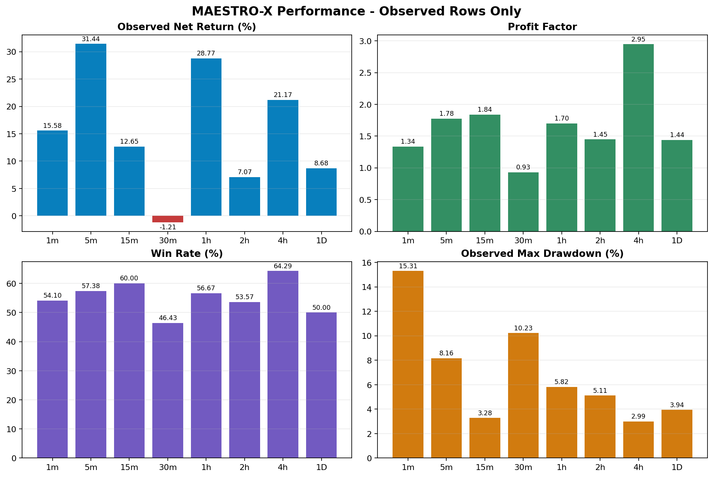
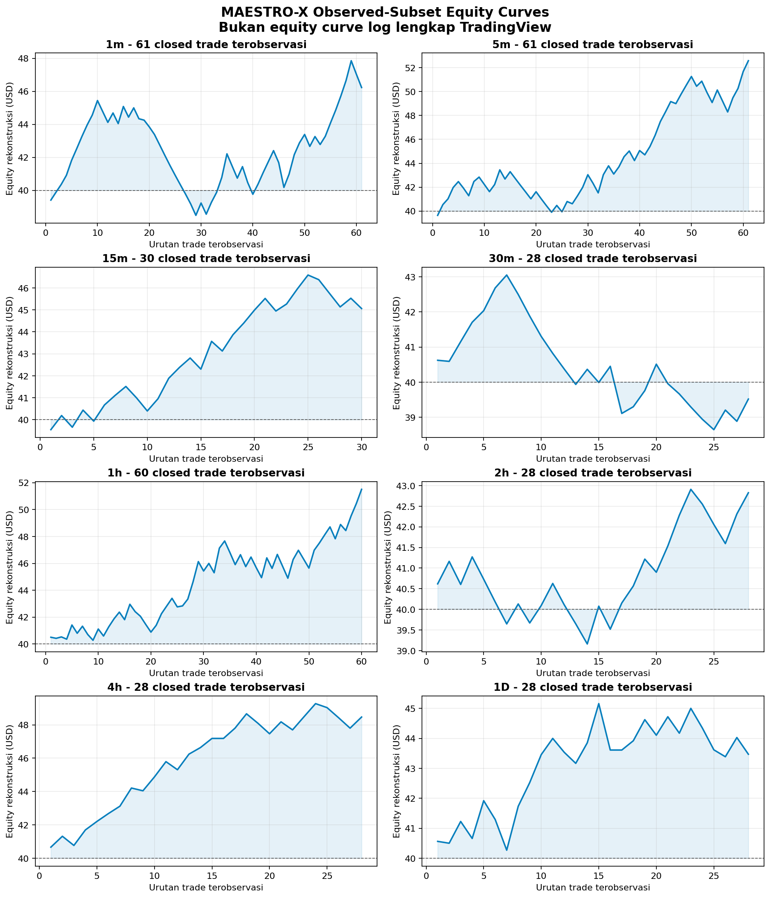
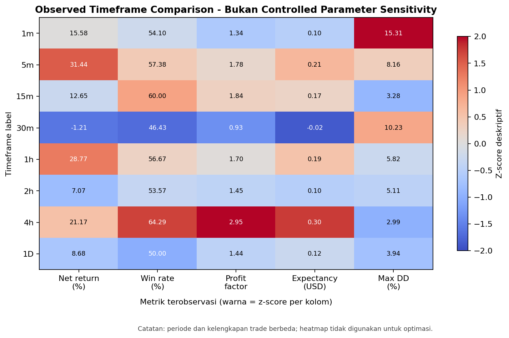

Delapan file tersedia. Sebagian file memuat append lintas-timeframe dan sebagian sequence trade ID tidak lengkap. Normalisasi memakai blok terakhir sesuai nama file; raw data tidak diubah.
Buka data validation JSON | Metodologi lengkap | Diskusi robustness
| timeframe | total_trades | net_profit_usd | net_return_pct | win_rate_pct | profit_factor | expectancy_usd | max_drawdown_pct | trade_sharpe_approx |
|---|---|---|---|---|---|---|---|---|
| 1m | 61 | 6.2310 | 15.5775 | 54.0984 | 1.3351 | 0.1021 | 15.3074 | 1.0711 |
| 5m | 61 | 12.5760 | 31.4400 | 57.3770 | 1.7762 | 0.2062 | 8.1569 | 2.1158 |
| 15m | 30 | 5.0620 | 12.6550 | 60.0000 | 1.8375 | 0.1687 | 3.2755 | 1.5705 |
| 30m | 28 | -0.4820 | -1.2050 | 46.4286 | 0.9316 | -0.0172 | 10.2256 | -0.1673 |
| 1h | 60 | 11.5090 | 28.7725 | 56.6667 | 1.6978 | 0.1918 | 5.8155 | 1.8584 |
| 2h | 28 | 2.8270 | 7.0675 | 53.5714 | 1.4484 | 0.1010 | 5.1148 | 0.9446 |
| 4h | 28 | 8.4690 | 21.1725 | 64.2857 | 2.9464 | 0.3025 | 2.9854 | 2.6918 |
| 1D | 28 | 3.4700 | 8.6750 | 50.0000 | 1.4394 | 0.1239 | 3.9384 | 0.8368 |


| timeframe | median_max_drawdown_pct | max_drawdown_interval_95_lower_pct | max_drawdown_interval_95_upper_pct | worst_max_drawdown_pct | ruin_probability_pct |
|---|---|---|---|---|---|
| 1m | 9.0787 | 5.5005 | 15.6946 | 22.6450 | 0.0000 |
| 5m | 6.5703 | 4.0103 | 11.7832 | 20.5500 | 0.0000 |
| 15m | 4.0401 | 2.4896 | 7.2874 | 12.9162 | 0.0000 |
| 30m | 7.0261 | 4.3927 | 10.9661 | 14.5831 | 0.0000 |
| 1h | 7.1601 | 4.3696 | 12.8229 | 20.4257 | 0.0000 |
| 2h | 4.6574 | 2.6636 | 8.2133 | 11.9620 | 0.0000 |
| 4h | 2.9052 | 1.5650 | 5.4479 | 8.7363 | 0.0000 |
| 1D | 6.5397 | 3.8741 | 11.2733 | 17.3553 | 0.0000 |
Buka laporan Monte Carlo lengkap
Timeframe hanya dapat dibandingkan secara deskriptif. Dimensi yang tidak dapat diestimasi: htf_bias_timeframe, minimum_entry_score.

Perbedaan antartimeframe dapat berasal dari perubahan sample period, missing trades, market regime, atau konfigurasi yang tidak tercatat. Hasil ini tidak digunakan untuk mengoptimasi parameter maupun mengubah Pine Script.